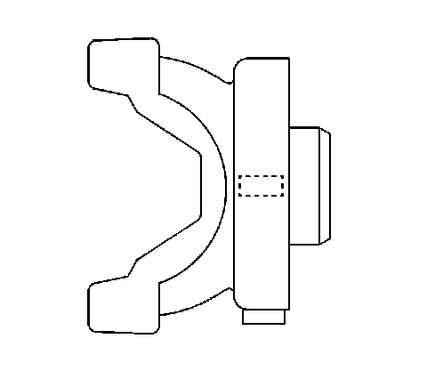
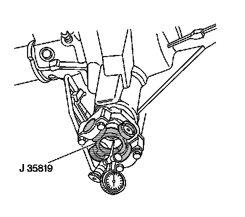
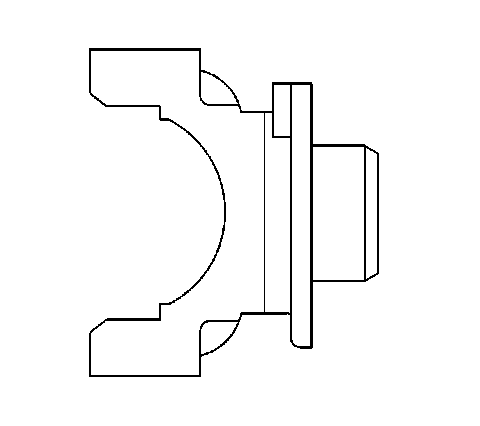

Pinion Flange Runout Measurement
Pinion Flange Runout Measurement
Tools Required
* J 8001 Dial Indicator Set, or equivalent
* J 23409 Dial Indicator Extension, or equivalent
* J 35819 Flange Runout Gage
Important: This measurement procedure is intended to measure drive axle pinion flanges with 1-piece U-joint yokes only, not bolt-on yokes.
If equipped with a system balanced flange, use the following procedure, System Balanced Flange. If equipped with a non-system balanced flange, use the second procedure, Non-System Balanced Flange.
System Balanced Flange

System balanced drive axles utilize a deflector design on the pinion flange, that is able to hold system balance weights on its outside diameter.
1. Raise and support the vehicle, with the wheels free to rotate. Refer to Lifting and Jacking the Vehicle (Service and Repair) .
2. Remove the propeller shaft from the pinion flange.

3. Install the J 35819 to the pinion flange.
4. Assemble and install the J 8001 and the J 23409 to the drive axle and to the J 35819 .
Important: The dial indicator will display inverted readings. You are measuring the inside diameter of the flange, not the outside diameter. The highest reading on the dial indicator is the low spot; the lowest reading is the high spot.
5. Rotate the pinion flange 360 degrees and zero the dial indicator on the low spot.
6. Rotate the pinion flange again and record the total runout.
Important: All runout measurement tolerances provided are to be used as guidelines. The measurement tolerances provided and their effect on vibration correction may vary for each vehicle.
7. If the system balanced pinion flange runout measurement is between 0.00-0.38 mm (0.00-0.015 in), the pinion flange is considered within acceptable runout limits.
8. If the system balanced pinion flange runout measurement exceeds 0.00-0.38 mm (0.00-0.015 in), the pinion flange must be re-indexed 180 degrees or replaced.
If the drive axle utilizes a crush-type sleeve to achieve pinion bearing preload, the pinion flange can only be removed and installed 1 time before the crush-type sleeve must be replaced. Sleeve replacement requires removal and installation of the ring and pinion gear set. If there is evidence that the pinion has been removed and installed previously, replace the sleeve.
9. If the pinion flange has been re-indexed, re-measure the pinion flange runout.
10. If the runout re-measurement of the re-indexed pinion flange still exceeds the tolerance guidelines, the pinion flange requires replacement.
Important: Inspect the runout of any replacement pinion flange.
11. If the pinion flange was replaced, check the runout of the replacement pinion flange.
Important: If the pinion flange was re-indexed or replaced, the driveline MUST be system balanced.
12. If the pinion flange was re-indexed or replaced, system balance the driveline. Refer to Driveline System Balance Adjustment (Using EVA) (Driveline System Balance Adjustment (Using EVA))Driveline System Balance Adjustment (Without EVA) (Driveline System Balance Adjustment (Without EVA)) .
Non-System Balanced Flange

Drive axles that are non-system balanced use a pinion flange dust slinger design, that is able to hold a runout compensation weight on the face of the dust slinger.
1. Raise and support the vehicle, with the wheels free to rotate. Refer to Lifting and Jacking the Vehicle (Service and Repair) .
2. Remove the propeller shaft from the pinion flange.
3. Install the J 35819 to the pinion flange.
4. Assemble and install the J 8001 and the J 23409 to the drive axle and to the J 35819 .
Important: The dial indicator will display inverted readings. You are measuring the inside diameter of the flange, not the outside diameter. The highest reading on the dial indicator is the low spot; the lowest reading is the high spot.
5. Rotate the pinion flange 360 degrees and zero the dial indicator on the low spot.
6. Rotate the pinion flange again and record the total runout.
Important: All runout measurement tolerances provided are to be used as guidelines. The measurement tolerances provided and their effect on vibration correction may vary for each vehicle.
7. If the pinion flange runout is 0.15 mm (0.006 in) or less, there should not be a runout compensation weight. If there is a compensation weight, remove the weight.
8. If the pinion flange runout is greater than 0.15 mm (0.006 in) but less than 0.28 mm (0.011 in) and the runout compensation weight is at or near the low spot, no further action is necessary. If the runout compensation weight is not at or near the low spot, remove the weight.
9. If the pinion flange runout is greater than 0.28 mm (0.011 in) but not greater than 0.38 mm (0.015 in) and the runout compensation weight is at or near the low spot, no further action is necessary. If the runout compensation weight is not at or near the low spot, remove the weight and re-index the pinion flange until the runout is 0.25 mm (0.010 in) or less.
If the drive axle utilizes a crush-type sleeve to achieve pinion bearing preload, the pinion flange can only be removed and installed 1 time before the crush-type sleeve must be replaced. Sleeve replacement requires removal and installation of the ring and pinion gear set. If there is evidence that the pinion has been removed and installed previously, replace the sleeve.
10. If after re-indexing the pinion flange, it is not possible to achieve runout of 0.25 mm (0.010 in) or less, the pinion flange requires replacement.
Important: Inspect the runout of any replacement pinion flange.
11. If the pinion flange was replaced, check the runout of the replacement pinion flange.